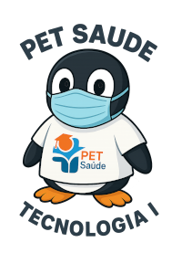

Início | Integrantes | Projeto |
O PET-Saúde - Tecnologia I tem como propósito integrar estudantes das áreas da computação e da saúde em um ambiente colaborativo de aprendizado e inovação. Por meio de atividades práticas, o projeto busca promover o desenvolvimento de soluções tecnológicas que contribuam para o aprimoramento dos serviços de atenção básica à saúde, favorecendo a comunicação entre profissionais, unidades de saúde e a comunidade.
Além de estimular o trabalho em equipe e a troca de conhecimentos entre diferentes áreas, o PET-Saúde também incentiva a aplicação de metodologias ágeis, o uso de ferramentas digitais e a formação de competências técnicas e humanísticas voltadas para a melhoria do atendimento e da gestão em saúde pública.
O PET-Saúde tem como objetivo capacitar uma equipe de 8 participantes (6 estudantes da área de computação e 2 estudantes da área da saúde), para desenvolver soluções computacionais que promovam o SUS Digital, além de atender uma possível demanda de um DashBoard para informações de pacientes.
O projeto surgiu para integrar todas UBS, facilitando o diagnóstico e tratamento dos pacientes da cidade de Bagé.
A intenção é criar um aplicativo disponível ao público para agendar exames e consultas em UBS próxima a ele, também acompanhar o tratamento que está sendo realizado. Não só isso como a criação de um site para uso das UBS compartilhando dados de pacientes e de consulta para facilitar diagnósticos e tratamentos futuros.
Com isso a equipe de Tecnologia 1 do PET-Saúde visa melhorar o atendimento e a gestão em saúde pública, promovendo a integração entre as áreas de computação e saúde.
O projeto tem como metodologia o desenvolvimento ágil, com 12 horas de laboratório e reuniões semanais para acompanhamento do progresso. Serão utilizadas ferramentas de versionamento de código, como Google Meet, e plataformas de colaboração, como Trello, para organizar as tarefas e facilitar a comunicação entre os membros da equipe.
Trello foi utilizado para melhor gerência da equipe, mantendo ele atualizado semanalmente e com tarefas a cumprir pela equipe. Com isso foi possível que a equipe sempre estivesse em sincronia e que as tarefas sempre fossem realizadas.
Foi utilizado pela gerengia do grupo PET Saúde para que informações mais importantes fossem passada a todos os grupos, assim como cursos de formação e dados nescessário das equipes participantes.
Foi utilizado para versionamento do código, facilitando o trabalho em equipe e o controle de versões do sistema em desenvolvimento.
Foi utilizado para hospedar o site do projeto, permitindo a divulgação das informações e o acesso ao sistema desenvolvido pela equipe.
Foi utilizado para reuniões integrando a equipe formada pela área da computação com a equipe formada pela área da Saúde. Assim possibilitando que as duas partes se ajudassem.
Foi utilizado o laboratório da computação para realizar reuniões semanais e para manter a equipe trabalhando, sendo nescessário a presença de pelo menos 12 horas semanais por cada integrante do grupo.